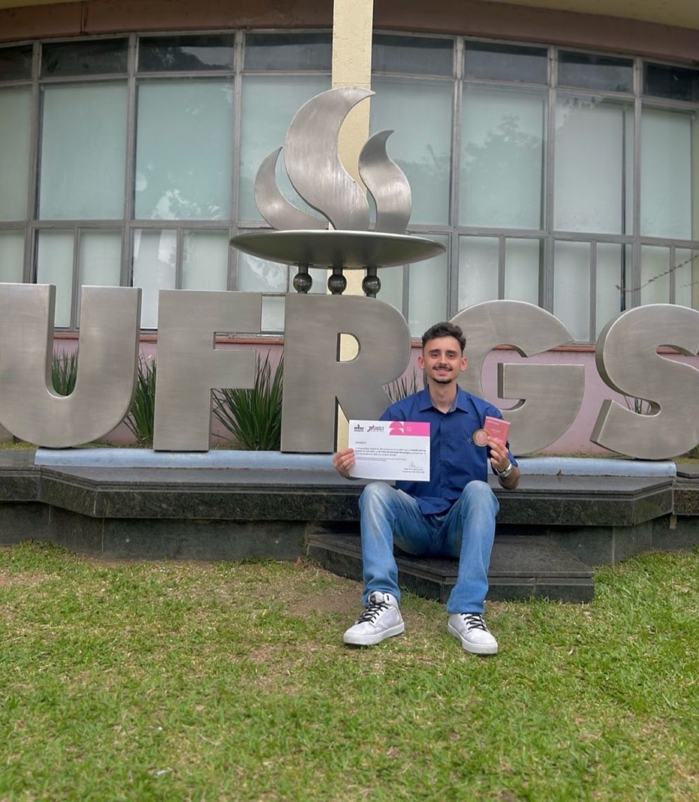

Henrique Freitas Delfino
Estudo Física na UFRGS e escrevo software de IA que uso no dia a dia. O OBEY, meu assistente de voz local, tem 56.791 linhas e 2.406 testes. No Centro de Biotecnologia da UFRGS, treinei um modelo que reconstrói séries climáticas e agora monto a pipeline para prever resistência antifúngica.
- testes no OBEY, nenhum falhando
- 2.406
- custo da governança por ação; o teto é 1 ms
- 0,376 ms
- no teste de 213 dias do modelo que reconstruiu 366 dias de insolação
- R² = 0,903
- 16ª FINOVA, UFRGS, outubro de 2026
- Prêmio Destaque
Sobre
Curso o 5º semestre do bacharelado em Física, com previsão de conclusão em 2028/1. A base que uso todo dia vem daí: cálculo, álgebra linear, mecânica estatística, métodos numéricos e física computacional.
Nos projetos abaixo, cada número tem procedência. O OBEY tem tetos de latência verificados por benchmark e verificações executáveis para o que o guia técnico afirma. O METEO-SOL separa no arquivo final o que veio de sensor e o que veio do modelo. Os dois documentam o que ainda não funciona bem.
De 2018 a 2023 trabalhei com eletrônica embarcada automotiva: reprogramação e clonagem de centrais (ECUs) de injeção, ABS e airbag, troca de mapas e verificação de checksums. Foi meu primeiro contato com software em que um byte errado tem consequência física.
- Formação
- Bacharelado em Física, UFRGS. 5º semestre, conclusão prevista em 2028/1
- Pesquisa
- Bolsista no Centro de Biotecnologia (CBiot) da UFRGS desde fevereiro de 2026. Plano atual da bolsa BIT/CNPq: setembro de 2026 a agosto de 2027
- Idiomas
- Português nativo. Inglês fluente, certificação Fisk de nível avançado
01
IA generativa, agentes e segurança
OBEY
Assistente de voz local, com orquestração de agentes e um núcleo determinístico que decide o que pode ser executado.
Digo "Obey", falo uma ordem e ouço a resposta. O OBEY lê e organiza arquivos, roda comandos de uma lista fechada, pesquisa na web, lê a janela em foco e lembra fatos sobre mim. Pedidos grandes de programação vão para o Claude, que planeja, divide o trabalho entre agentes Gemini e revisa a entrega.
Transcrição, palavra de ativação, modelos de linguagem e síntese de voz rodam na máquina. O que sai para a internet está declarado: a busca na web, os pedidos ao Claude e as tarefas de uso do computador (essas duas só depois de confirmação), a busca de uma música pedida pelo nome e, se eu ligar, a voz remota, que só recebe frases não marcadas como sigilosas. Não há custo por chamada; tudo entra por assinaturas.
- 56.791
- linhas em 187 módulos
- 2.406
- testes em 113 arquivos, sem falhas
- 27
- ferramentas sob governança
- 33/34
- invariantes de segurança provados por execução; o outro, por análise do código
O modelo propõe, o runtime decide
A defesa contra prompt injection segue o padrão CaMeL (Debenedetti et al., 2025). O modelo de linguagem nunca executa nada: ele escreve uma intenção, como [LER_ARQUIVO]: nota.txt. Um núcleo determinístico transforma a intenção num plano tipado, confere de onde veio cada argumento, calcula o risco da ação concreta e então executa, pergunta ou recusa.
A confiança de cada valor nasce da origem, numa única tabela do código. Um valor combinado herda a menor confiança, e reler um registro do disco recalcula a confiança a partir da origem gravada. Um teste de propriedade sobre 500 programas aleatórios verifica que nenhuma transformação a eleva.
| destino →origem ↓ | UI_DISPLAY | QUARANTINE_READER | PLANNER_PROMPT | FILE_WRITE | SHELL_ARG | NETWORK_OUT | MEMORY_WRITE |
|---|---|---|---|---|---|---|---|
| Fala do usuário | permitido | permitido | permitido | permitido | permitido | permitido | permitido |
| Texto do chat | permitido | permitido | permitido | permitido | permitido | permitido | permitido |
| Modelo local | permitido | permitido | permitido | permitido | permitido | permitido | permitido |
| Saída de ferramenta | permitido | permitido | permitido | permitido | permitido | permitido | permitido |
| Página web | permitido | permitido | bloqueado | bloqueado | bloqueado | bloqueado | bloqueado |
| Texto da tela | permitido | permitido | bloqueado | bloqueado | bloqueado | bloqueado | bloqueado |
| permitido | permitido | bloqueado | bloqueado | bloqueado | bloqueado | bloqueado | |
| Servidor MCP de terceiros | permitido | permitido | bloqueado | bloqueado | bloqueado | bloqueado | bloqueado |
- Risco por ação concreta: ler um arquivo é LOW,
git statusé HIGH (todo comando de shell pede confirmação),git reset --hardé CRITICAL. Ferramenta sem risco declarado é proibida, e nenhuma confirmação destrava PROHIBITED. - A confirmação gera um registro preso ao hash SHA-256 da ferramenta com os argumentos ordenados, válido por 120 s e de uso único. Autorizar
git statusnão autorizagit commit. - Um segundo eixo marca o sigilo (PUBLICO, PESSOAL, SECRETO). Detectores de CPF, cartão, chave privada e tokens marcam o valor, e um valor SECRETO não chega à rede, à voz, ao terminal nem a provedor externo.
- Falha fechada: uma exceção na autorização liga o Modo Seguro e nega. Comandos PowerShell passam por um analisador e uma lista de comandos permitidos, e rodam dentro de um Job Object do Windows com limite de memória e de processos.
Na avaliação adversarial, cruzei as 16 famílias de ataque do corpus do AgentDojo com 4 origens hostis e 7 destinos privilegiados, e nenhuma combinação atravessou. Somei 38 vetores próprios em 7 categorias: injeção por tag, PowerShell, caminhos, memória, tela, MCP e exfiltração. O resultado mostra que as barreiras resistem a famílias de injeção publicadas; não rodei o benchmark oficial do AgentDojo.
Um turno, da voz à resposta
- 01 Sentinela openWakeWord com modelo ONNX treinado na minha voz 1,84 ms por quadro de 80 ms
- 02 Fim da fala Silero VAD e Smart Turn v3.2 julgam se a frase acabou julga a partir de 0,3 s de silêncio
- 03 Transcrição Faster-Whisper large-v3-turbo na GPU 353 ms por frase, 3,8% de erro por palavra
- 04 Roteador regex por palavra inteira, 12 intenções; "que horas são?" nem chega ao modelo 0,028 ms por frase
- 05 Modelo gemma4:e2b ou qwen3.8:27b no Ollama, escolhido pela complexidade 131 ms até o primeiro token
- 06 Kernel plano tipado, capacidades, risco e consentimento 0,376 ms por ação
- 07 Voz Piper local, frase a frase enquanto o modelo ainda escreve barge-in corta a fala em 0,20 ms
O cache do Ollama só reaproveita o trecho inicial idêntico entre dois pedidos. Tirei a hora e o contexto do turno do prompt de sistema e deixei o prefixo estável. O tempo até o primeiro token caiu de 12,6 s para 3,0 s no qwen3.8:27b (−76%) e de 336 ms para 131 ms no gemma4:e2b, e parou de crescer com a conversa.
Arquitetura e método
Camadas, de cima para baixo: interface PyQt6; núcleo ObeyAgent; áudio, cérebro e rotas, memória e executor governado; kernel de segurança; 27 ferramentas com sandbox.
Conduzo o OBEY como tech lead, com agentes de IA escrevendo partes do código. Por isso toda correção segue o mesmo roteiro: reproduzir o defeito num diretório temporário descartável, escrever o teste que falha, corrigir, remover a correção para ver o teste falhar de novo (mutação manual) e rodar a suíte inteira. O guia técnico tem 134 afirmações ligadas a verificações executáveis, e as 134 passam.
02
Pipeline de ML e produto de dados
METEO-SOL
Reconstrução de 366 dias de insolação em Porto Alegre com Random Forest, entregue como aplicativo desktop.
A estação automática A801 do INMET, no Jardim Botânico de Porto Alegre, mede radiação solar global de hora em hora, mas não tem heliógrafo. A estação convencional 83967 fica no mesmo ponto (−30,0536°, −51,1747°, 41,18 m) e mede a insolação diária. Entre 2022 e 2025 ela ficou 394 dias sem leitura, 363 deles em 2025.
Como as duas estações dividem o mesmo sítio, relevo, nuvens locais e microclima são iguais para o sensor preditor e para o sensor alvo. Usei os 1.061 dias em que ambas funcionaram para ensinar um modelo a estimar as horas de sol a partir dos sensores da A801. A OMM conta insolação como o tempo em que a irradiância direta passa de 120 W/m²; o modelo traduz a energia integrada do dia e o estado higrotérmico da atmosfera nessa duração.
Quatro scripts, cada um auditável
01_exploracao.pyLê os CSVs do INMET, descarta o cabeçalho de 10 linhas e encontra 14.904 leituras negativas do piranômetro à noite, efeito do resfriamento radiativo.
02_preprocessamento.pyAplica max(0, R) antes da soma, agrega 35.064 horas em 1.461 dias e cria médias móveis de 3 e 7 dias de temperatura e umidade.
03_modelo_treinamento.pyJunta as estações (1.061 dias completos), separa 80/20 com seed 42 e treina um RandomForestRegressor com 100 árvores sobre 10 preditores.
04_predicao_final.pyCarrega o modelo serializado sem retreinar, trata as bordas das janelas móveis e gera o banco final de 1.433 dias no padrão do INMET.
- 0,9032
- R² no teste, N = 213 dias
- 0,85 h
- MAE, cerca de 51 min por dia
- 1,24 h
- RMSE
- 1.433
- dias no banco final
Por que Random Forest: a radiação sozinha já tem correlação r = 0,917 com a insolação, mas em dias de nuvem quebrada ou neblina a relação entre energia acumulada e horas acima de 120 W/m² deixa de ser linear. As árvores pegam a interação com umidade e amplitude térmica sem exigir normalização de grandezas heterogêneas (kJ/m², °C, %, m/s, mm).
O modelo (Joblib, 6,19 MB) vai dentro de um executável Windows feito com Eel, Plotly e PyInstaller. Pesquisadores de biociências abrem a série de 1.433 dias, recortam períodos no gráfico, exportam os CSVs e leem o código dos quatro scripts dentro do próprio app, sem instalar Python. No arquivo final, a coluna estimada se chama Insolacao_Prevista_h, separada das medições, para quem cita o banco saber o que veio de sensor.
03
Pesquisa atual
Predição de resistência antifúngica
Modelos de ML que ligam o ambiente de coleta e o genoma de leveduras ao perfil de resistência a antifúngicos, para vigilância genômica em Uma Só Saúde.
O projeto parte de 119 isolados de leveduras do gênero Candida coletados no Arroio Dilúvio, em Porto Alegre, entre 2023 e 2026, todos com genoma completo sequenciado. Para cada isolado, junto data e coordenadas da coleta, perfil fenotípico de suscetibilidade, dados meteorológicos do INMET, parâmetros físico-químicos da água, quantificação de antimicrobianos e ecologia de paisagem, como uso do solo e densidade urbana.
A pergunta é se o cenário ambiental da coleta prevê a categoria de cada isolado (suscetível, intermediário ou resistente) e quais mecanismos genômicos aparecem junto com cada pressão ambiental.
- set a nov 2026em andamento Pipeline em Python para extrair, limpar e normalizar dados ambientais, fenotípicos e genômicos do ResGen DB, um banco relacional.
- dez 2026 a fev 2027 Imputação e normalização, correlação de Pearson ou Spearman, PCA. Classificadores supervisionados no scikit-learn com ajuste de hiperparâmetros e validação cruzada k-fold.
- mar a mai 2027 SNPs, variações no número de cópias e alterações de ploidia, lidos de arquivos VCF e codificados em matrizes de features. SHAP e feature importance para ligar variáveis ambientais a mecanismos de resistência.
- jun a ago 2027 O melhor modelo, serializado com joblib ou pickle, acoplado ao back-end Django do ResGen como prova de conceito de um módulo analítico.
Hoje o projeto está no nível 2 da escala de maturidade tecnológica (TRL): o conceito está formulado e ainda não há prova de conceito analítica sobre esses dados. Ao fim da bolsa, a meta é chegar ao TRL 3 com uma pipeline validada e documentada, base para uma futura API no dashboard do ResGen DB.
04
Pesquisa, primeira fase
ResGen DB e o Prêmio Destaque na FINOVA
Engenharia de software científico para um banco público de genomas e metagenomas de resistência antimicrobiana.
A Iniciativa ResGen faz monitoramento genômico e metagenômico da resistência antimicrobiana em amostras humanas, ambientais, animais e de alimentos. Na minha primeira fase no laboratório mantive o banco de dados público e desenvolvi funcionalidades novas da aplicação web em Django, com gráficos interativos em amCharts 5. O projeto se chamava "Pipeline integrada e banco de dados web-based para monitoramento genômico e metagenômico da resistência a antimicrobianos".
- Scripts em Python que automatizam a leitura e a inserção dos dados tabulares de colaboradores e das séries do INMET.
- Reestruturei os dados existentes num modelo padronizado com dicionário de dados, para que fontes diferentes conversem.
- Inserção em lote com controle transacional (
transaction.atomic) e validação de registros por APIs externas. - O METEO-SOL nasceu aqui, para cruzar radiação e clima com as coletas de microrganismos.
- 1.197
- entradas
- 589
- genomas de isolados
- 608
- metagenomas
- 94
- espécies microbianas
- 29
- antimicrobianos testados
- 26
- tipos de amostra
Números do ResGen DB exibidos na plataforma, em fase de testes em ufrgs.br/resgen.
Prêmio Destaque, 16ª FINOVA
O trabalho foi premiado na 16ª Feira de Inovação Tecnológica da UFRGS, parte do Salão UFRGS 2026, realizada de 19 a 23 de outubro no Campus do Vale. No vídeo, apresento a pesquisa em três minutos.


Trajetória
- 2018 a 2023Eletrônica embarcada e reprogramação automotivaOficina Alex Reis, Porto Alegre. Manutenção de hardware e software de centrais de injeção, ABS, airbag e carroceria; troca de mapas e verificação de checksums.
- em curso, até 2028/1Bacharelado em Física, UFRGS5º semestre, conclusão prevista em 2028/1. Ênfase em métodos quantitativos e computacionais.
- fev 2026Entrada no Centro de Biotecnologia (CBiot), UFRGSIniciativa ResGen: banco de dados, aplicação Django e o METEO-SOL.
- set 2026Bolsa BIT/CNPqPlano de predição de resistência antifúngica com ML, até agosto de 2027.
- out 2026Prêmio Destaque na 16ª FINOVASalão UFRGS 2026, Campus do Vale.
- nov 2026OBEY 3.4.32.406 testes, 33 de 34 invariantes de segurança provados por execução.
Ferramentas
IA generativa e LLMs
LLMs, RAG, agentes autônomos, MCP, prompt engineering, fine-tuning, PyTorch, Hugging Face, Ollama
Machine learning e dados
pandas, NumPy, SciPy, scikit-learn, Random Forest, PCA, SHAP, validação cruzada estratificada, ETS, bancos de dados vetoriais, dados genômicos
Engenharia de software
Python, Django, APIs REST, pipelines de inferência, Pytest, Git, GitHub, CI/CD, OpenTelemetry
Matemática
Cálculo diferencial e integral, álgebra linear, métodos numéricos, mecânica estatística, modelagem probabilística
Contato
Respondo por e-mail ou WhatsApp, em português ou inglês.